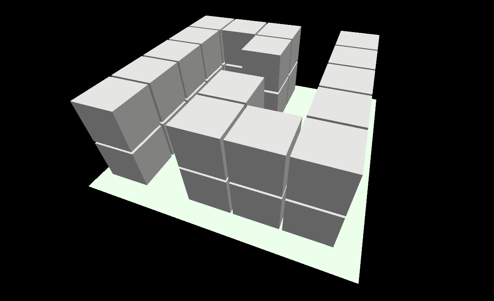
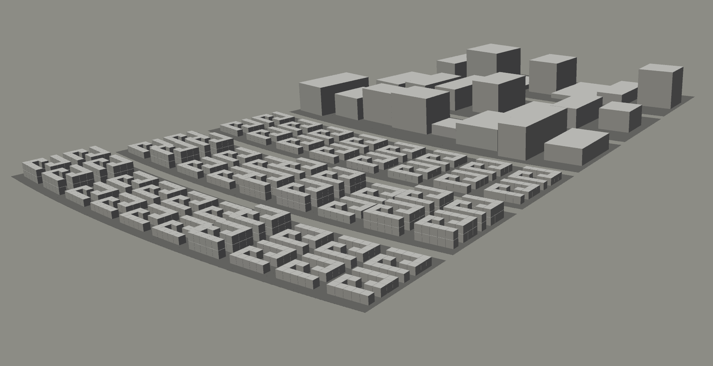
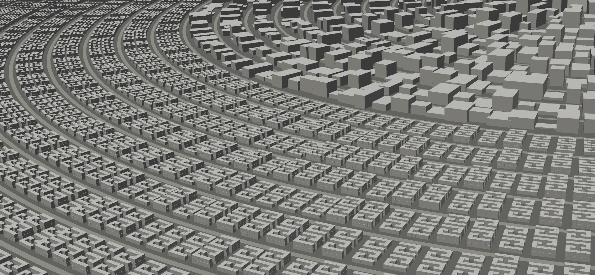
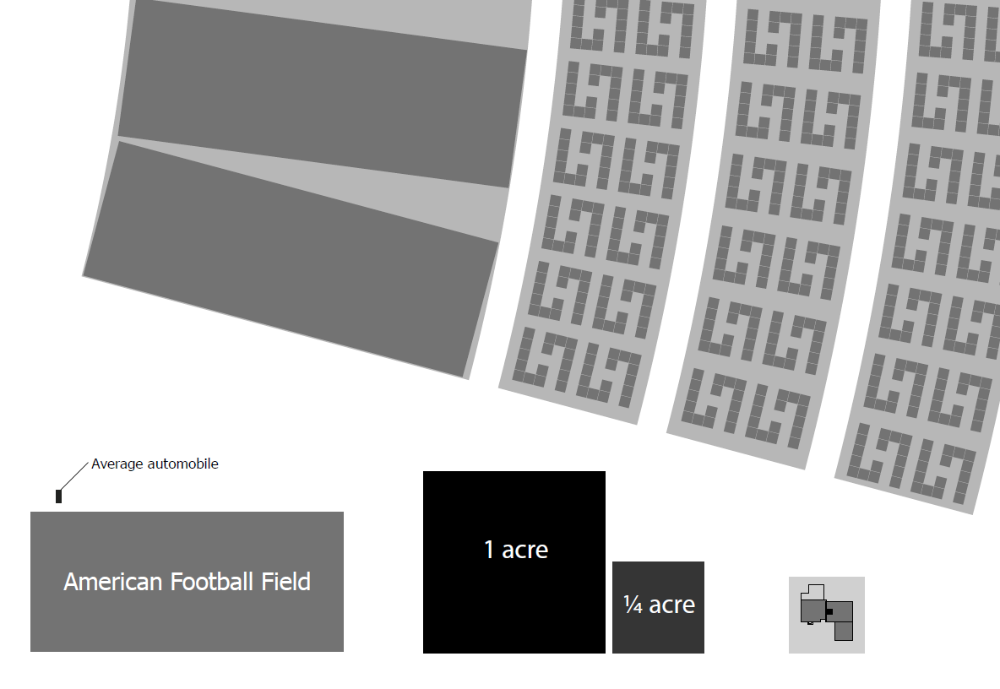

FEMA (Federal Emergency Management Agency): FEMA is a U.S. government agency that provides assistance to those affected by natural disasters. FEMA offers resources and tools to help individuals and communities prepare for and recover from natural disasters. This includes assistance with debris removal, temporary housing, and other emergency needs. [Website: FEMA]
The Red Cross: The Red Cross is an international organization that provides assistance during natural disasters. The organization provides emergency shelter, food, and supplies to those affected by natural disasters. They also offer resources to help individuals and communities prepare for natural disasters. [Website: Red Cross]
Local Emergency Management Agencies: Many cities and counties have emergency management agencies that can provide information and assistance during natural disasters. These agencies may have resources and information specific to the area in which you live.
Non-profit organizations: There are several non-profit organizations that provide assistance during natural disasters, such as Team Rubicon, NVOAD, and All Hands and Hearts. These organizations often have volunteers on the ground who can help with logistics and provide suggestions on next steps. [Websites: TR | NVOAD | AH&H]
The Salvation Army - The Salvation Army provides emergency financial assistance to families affected by disasters, including those who are homeless. The amount of assistance provided varies based on the specific disaster and the individual circumstances of each family. The assistance provided by The Salvation Army is in the form of grants and does not need to be paid back. [Website: Salvation Army]
The National Low Income Housing Coalition - The NLIHC provides emergency financial assistance to families affected by disasters, including those who are homeless. The amount of assistance provided varies based on the specific disaster and the individual circumstances of each family. The assistance provided by the NLIHC is in the form of grants and does not need to be paid back. In general, the assistance provided is meant to cover the basic needs of families who are displaced from their homes due to a natural disaster, such as temporary shelter, food, and clothing. [Website: NLIHC]
There have been some notable instances of large-scale financial assistance provided to families in the aftermath of natural disasters in the past ten years. For example, after Hurricane Harvey hit Texas in 2017, the Federal Emergency Management Agency (FEMA) provided more than $1.4 billion in housing assistance to more than 180,000 households, many of which were homeless or displaced due to the storm. Additionally, the American Red Cross and other organizations provided financial assistance to families affected by the storm.
Similarly, after Hurricane Maria devastated Puerto Rico in 2017, FEMA provided more than $1 billion in housing assistance to families affected by the storm, including many who were homeless or displaced. Other organizations, such as the Salvation Army and the NLIHC, also provided financial assistance to families affected by the storm.
Current solutions
Additional background.
Hurricane Katrina was a turning point for emergency management in the United States, leading to many changes in practices and policies. Here are some specific examples:
National Response Framework: FEMA also developed the National Response Framework (NRF), which is a comprehensive guide for how the federal government, state and local governments, and private sector organizations work together during disasters. [National Response Framework. Homeland Security. US Government Printing, 2008.]
Unified Command System: The NRF established a Unified Command System, which ensures that all responding agencies work together under a common set of objectives and priorities.
Pre-positioning of resources: In response to the delayed assistance to survivors of Hurricane Katrina, FEMA and other agencies began strategic placement of resources, such as food, water, personnel, equipment, and supplies, in advance of disasters. Pre-positioning can also include activities such training response personnel and coordinating with local and state emergency management agencies. [Website: US&R]
Improved communication: In the aftermath of Katrina, there were significant breakdowns in communication between responding agencies. To address this, the government established interoperable communication systems to improve communication between responding agencies.
Training and exercises: The government has increased its focus on training and exercises for emergency managers and responders to better prepare for disasters.
Increased focus on community resilience: There is now a greater focus on building community resilience, including programs to help individuals and communities prepare for disasters, and efforts to increase infrastructure resilience.
Improved evacuation planning: One of the major issues during Hurricane Katrina was the evacuation of the population. In response, there have been improvements in evacuation planning, including the use of technology to track evacuees and to provide more accurate information to the public.
Enhanced focus on vulnerable populations: The response to Hurricane Katrina highlighted the vulnerability of certain populations, including the elderly, disabled, and low-income individuals. There has since been an increased focus on addressing the needs of vulnerable populations during disasters.
Increased funding for disaster response and recovery: Following Hurricane Katrina, the federal government allocated significant funding to disaster response and recovery efforts, including to rebuilding infrastructure and providing aid to affected individuals and communities.
National Incident Management System: NIMS was established in 2004 but was widely adopted after Hurricane Katrina. It provides a standardized approach to managing incidents, including the development of incident command systems, operational protocols, and the use of common terminology across different agencies and jurisdictions. [Website: NIMS]
Greater emphasis on private sector involvement: The response to Hurricane Katrina highlighted the important role of the private sector in disaster response and recovery. Since then, there has been an increased emphasis on involving private sector organizations in planning and response efforts, including through public-private partnerships.
In the wake of Hurricane Katrina, significant changes were made to emergency management practices and policies. These changes have led to a more coordinated and effective approach to disaster response and recovery. There is now a greater emphasis on preparedness, resilience, and community involvement, which has helped to better prepare the U.S. for future disasters.
A2 Manifest
Types of natural disasters
Hurricanes and tropical storms: can cause widespread flooding, wind damage, and storm surges that can destroy homes and displace entire communities.
Earthquakes: can cause buildings to collapse and lead to widespread damage, leaving many people without a home.
Floods: can result in the destruction of homes and infrastructure, leaving people homeless.
Wildfires: can cause significant damage to homes and communities, forcing people to evacuate and find alternative housing.
Tornadoes: can cause severe damage to homes and communities, leaving people without a place to live.
Landslides and mudslides: can destroy homes and infrastructure, leaving people homeless.
Tsunamis: can cause widespread destruction, including the destruction of homes and infrastructure, leaving many people without a place to live.
Volcanic eruptions: can cause widespread damage to homes and communities, leaving people without a place to live.
Drought: can cause significant damage to crops and lead to the displacement of communities that rely on agriculture for their livelihoods.
Cyclones: (also known as typhoons or hurricanes) can cause significant damage to homes and infrastructure, resulting in displacement of communities and leaving people without shelter.
Winter storms: Severe events with heavy snow, ice, and strong winds can damage homes and cause power outages, making them uninhabitable and forcing people to seek alternative shelter.
Extreme heat waves: can cause heat-related illnesses and death, especially for vulnerable populations without access to air conditioning and proper shelter.
Extreme cold: (including polar vortexes) can cause damage to homes and infrastructure, leading to displacement of communities and leaving people without shelter.
Epidemics and pandemics: can result in the loss of livelihoods and housing due to economic disruption and job loss, forcing people to become homeless.
A3 Definition
More background on the term algorithm
According to Skiena [S. Skiena, The Algorithm Design Manual. Springer, 2008, algorist.com], "An algorithm is a procedure to accomplish a specific task." "There is a fundamental difference between algorithms, which always produce a correct result, and heuristics, which may usually do a good job but without providing any guarantee."
In contrast to the rigor of 'algorithm,' the term heuristic is defined as "any approach to problem solving that employs a practical method that is not guaranteed to be optimal, perfect, or rational, but is nevertheless sufficient for reaching an immediate, short-term goal or approximation." [Wikipedia: Heuristic]
Algorithms can be formally specified using Temporal Logic of Actions. Learn more here: TLA+
A4 Framework
System architecture
Additional volume study visualizations of the scalable recovery algorithm.

Fig. 21. Two-level residential module configuration

Fig. 22. A minimal deployment with residential modules in the foreground

Fig. 23. One quarter deployment with residential modules in the foreground
The visualizations above were rendered using the Processing Development Environment. [Website: PDE]
The following figure provides a sense of scale for components of the Proximity city layout. The upper part of the image contains a rendering of two service modules along with three partial arcs of residential modules. For comparison, the lower part of the image contains an American football field, an average-sized automobile, a 1 acre plot of land, a 1/4 acre plot (10,890 sqft), and a 7,750 square-foot residential plot containing a 2,000 sqft tri-level home.

Fig. 24. Service and residential modules compared to other areas (click or tap to zoom)
A5 Management
Example status levels
The management console provides a interactive view on the spectrum of operations in each sector of the city. In the examples below, status is broken into four distinct levels.
Maintenance operations status levels:
Normal
everything is functioning as it should be, and there are no issues or problems with the systems in the sector.
Warning
a potential problem or issue needs attention but is not yet critical. Action should be taken to prevent the issue from escalating to a more severe level.
Error
a problem or issue requires immediate attention. The systems in this sector may be partially or completely down, and action should be taken to address the problem as soon as possible.
Critical
a severe problem or issue requires immediate attention. The systems in this sector are likely to be completely down or unusable, and urgent action should be taken to address the problem.
Security status levels:
Normal
everything is safe and secure. There are no known security threats or breaches, and all security measures are functioning as expected.
Alert
a potential security threat or vulnerability has been identified. Action should be taken to investigate the issue and mitigate any risks.
Warn
a security threat or vulnerability has been identified and requires immediate attention. Action should be taken to address the issue and prevent any further harm.
Critical
a severe security threat or breach requires immediate action. The system may be compromised or under attack, and urgent measures should be taken to contain the issue, prevent further damage, and restore security.
Inventory status levels:
Normal
the inventory is fully stocked, and there are no shortages or excesses. The inventory is within the expected levels, and there is no need for immediate action.
Over
inventory levels have exceeded the expected range, and there is an excess of items in stock. Action will be taken to move the excess inventory, find alternative uses, or adjust the ordering and stocking procedures to avoid future overstocking.
Low
inventory levels have fallen below the normal range and may lead to depletion soon. Corrective action is required to replenish the inventory to avoid running out of stock.
Out
inventory levels have depleted entirely, and there are no more items available for use. Immediate action must be taken to replenish the inventory to prevent a loss or delay in operation.
Construction status levels:
Normal
construction has been finished, and the sector is ready to be used or occupied.
Plan
construction is proceeding as planned, and there are no significant issues or delays. The sector is on track, and progress is being made as expected.
Delay
construction has fallen behind schedule due to unforeseen circumstances such as weather, supply chain issues, or labor shortages. Action should be taken to identify the cause of the delay and find ways to catch up on lost time.
Stall
construction has come to a stop due to significant issues such as safety concerns, resource problems, or legal issues. Action should be taken to resolve the underlying issues and restart construction as soon as possible.
A6 Research
Additional references
Credits
Additional acknowledgement
Special thanks to:
Marvin Minsky, for robotics and AI brainstorming
Ruth Marsh, for energy consulting
Steve Clark, for engineering consulting
Ray Chris Schmidt, for information technology
Skip Franklin, co-founder, for collaborations
Gretchen Tillitt, for dashboard brainstorming
Roni Britton, for advice on nutrition and food supply
Rebecca Schultz, for pet and animal support
Valerie Fuller, for check-in
Gail McGovern, for input from American Red Cross
Bill Gates Sr., for collaborations between non-profits
Veronica Schmidt, for consulting on pets
Elena Schultz, for advice on families
The Homeless, for inspiration